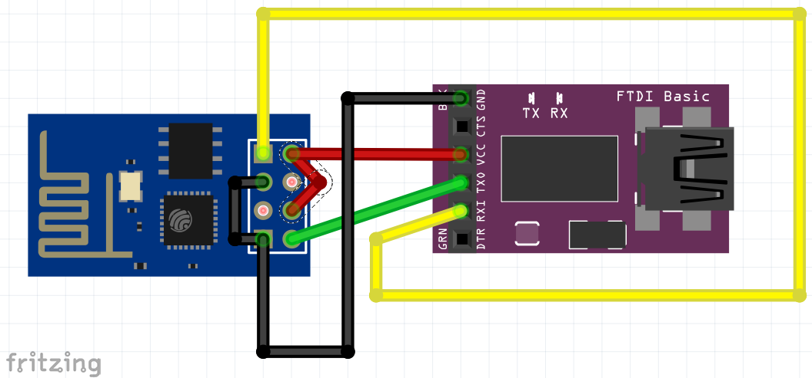

Python on ESP8266
Final Presentation

Luc Libralesso - Olivier Soldano
About the ESP8266
- A small card
- Wifi features
- Cheap (less than 5 euros)
Use cases
- Internet of Things
Purpose of the project
Allowing user to program the ESP8266 in Python, and compile to C++. It allows better performance.wiring schematics
Below the flash mode and the run mode of the ESP8266Flash Mode
Run Mode

Tests
Python ASTs
l = k = [1,2,3]
i = a = 0
while i < 3+1:
a += 1
Graphical output of the AST

AST Optimizer
AstOptimizer bitbucketC output
(python testNode.py | indent)
#include <vector>
#include "syscall.h"
#include "interface.h"
int main()
{
std::vector < int >l;
l.push_back(1);
l.push_back(2);
l.push_back(3);
std::vector < int >k;
k.push_back(1);
k.push_back(2);
k.push_back(3);
int i = 0;
int a = 0;
while (i < 4) {
a += 1;
}
return 0;
}
i = 0
while True:
esp.gpio2_toggle()
if i%16 < 10+2:
esp.wait(100)
else:
esp.wait(500)
i += 1
#include <vector>
#include "syscall.h"
#include "interface.h"
int main()
{
int i = 0;
while (1) {
GPIO2_TOGGLE();
if (i % 16 < 12) {
WAIT(100);
} else {
WAIT(500);
}
i += 1;
}
return 0;
}